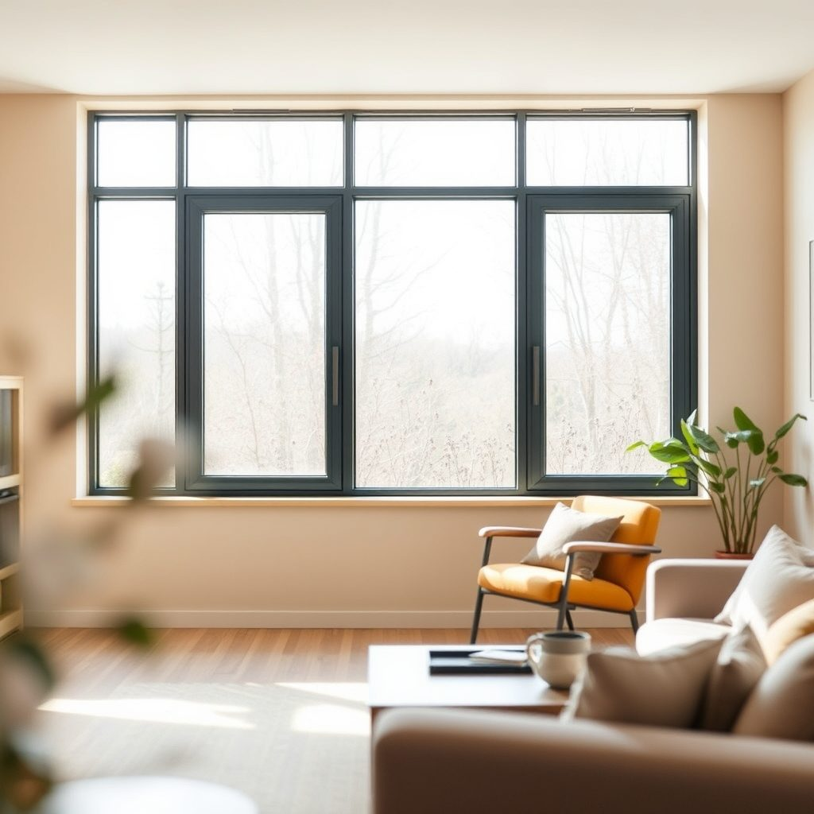

Блоки оконные из алюминиевых профилей в Юго-Восточном округе

Чем отличаются блоки оконные из алюминиевых профилей в Юго-Восточном округе? Мы ставим их в панельках и новостройках Москвы, делаем качественно и без лишней суеты.
Итог
Итог всегда один: назвать следующий шаг заказчику — бесплатный замер, расчёт на месте и фиксированная цена в договоре.
Блоки оконные из алюминиевых профилей: как выбрать
Выбирать надо от задачи, а не от картинки. Для жилой комнаты в Москве нужен тёплый алюминиевый профиль с терморазрывом: зимой он не будет холодным и не даст конденсат. Для балкона, лоджии или кладовки в Юго-Восточном округе часто хватает холодного профиля — там тепло не берегут так строго. Дальше смотрим проём: панелька, кирпич или новостройка. В панельке важно проверить ровность откосов и не заузить створку ради экономии. Створки делают под размер, чтобы открывались без усилий, ручка не цепляла штору, а фурнитура выдерживала вес стекла. Стеклопакет подбирают по шуму и теплу: у дороги или во дворе лучше двухкамерный, для больших стекол — закалённое стекло. Если окно на солнечную сторону, лишний нагрев не нужен, но и совсем тонкий профиль брать не стоит. Спрашивайте, какой профиль тёплый, какая фурнитура, как будете крепить и чем герметизировать. Хороший мастер не прячет эти детали. Замерщик должен посмотреть не только ширину и высоту, но и глубину проёма, четверть, отливы, подоконник и место для штор. Для Юго-Восточного округа это обычная история: дома разные, проёмы тоже. Если рама уже стоит криво, новое окно не спасёт, пока не исправят узел. Мы делаем качественно: сначала точный замер, потом изготовление, потом монтаж и регулировка. Тогда окно закрывается мягко, не дует, стекло не потеет по краям. Коротко: выбирайте тёплый или холодный профиль по помещению, проверяйте фурнитуру и не соглашайтесь на монтаж наугад.
Что важно при монтаже в панельке
Когда окно уже выбрано, всё решает монтаж. В панельке нельзя просто вставить раму в старый проём и запенить. Сначала проверяют геометрию: стены могут быть завалены, четверть неровная, подоконник стоит с уклоном. Если это не учесть, створка будет задевать, фурнитура начнёт хрустеть, а из-под откоса потянет холодом. Крепят раму по уровню, анкерами или пластинами, смотря какой узел. Пену используют не как замок, а как заполнитель: снаружи нужен паропроницаемый слой, внутри — пароизоляция. Иначе точка росы уйдёт в стену или в профиль. Отлив ставят с уклоном, чтобы вода не стояла. Подоконник крепят с опорой, не на пену. Откосы делают так, чтобы не перекрывать приток воздуха к фурнитуре. Если окно большое, створки распределяют по весу: где надо, ставят импост и дополнительный крепёж. В Юго-Восточном округе дома разные, поэтому шаблонный монтаж не проходит. Мы делаем качественно: мастер сначала собирает узел, потом проверяет створки, регулирует прижим и показывает, как ухаживать. После установки окно должно открываться легко, закрываться плотно, не свистеть и не пропускать воду. Если монтаж сделан наспех, даже хороший профиль не спасёт. Коротко: выбирайте по задаче, но требуйте нормальный узел монтажа.
Можно ли ставить алюминий в жилую комнату?
Можно, если профиль тёплый, с терморазрывом, и монтаж сделан по узлу. Холодный вариант подойдёт для балкона, лоджии или кладовки. Если нужен покой зимой, не экономьте на примыканиях и фурнитуре — тогда окно будет тихим и без продувания.
Бесплатный замер
Оставьте заявку на бесплатный замер: приедем в удобное время, посчитаем на месте и зафиксируем цену в договоре.
Призыв